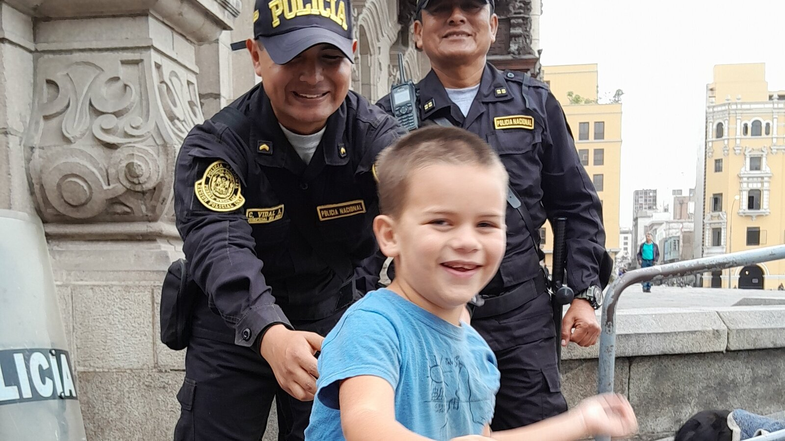

Why Adults With Autism Need More Than Basic Care
Food, hygiene, medication, and supervision matter. But good lifelong care also requires relationships, choice, dignity, community, privacy, and being known as a person.

An adult can be fed, clean, medicated, supervised, and physically safe — and still have a very small life.
Those things matter enormously.
Anyone responsible for a vulnerable adult has to think about meals, hygiene, medication, medical appointments, sleep, transportation, supervision, injury prevention, and emergency planning. For some autistic adults with significant support needs, those responsibilities may continue every day for the rest of their lives.
But meeting those needs is the beginning of care.
It is not the whole purpose of a life.
An adult also needs to be known.
They need people who recognize what they enjoy, what frightens them, what makes them laugh, what overwhelms them, what they refuse, what they seek out, who they are happy to see, and what makes an ordinary day feel good.
They need relationships.
They need choices.
They need privacy.
They need places where they belong.
They need opportunities to experience the world in ways that matter to them.
Being alive and having a life are not exactly the same thing.
Basic care is essential
There is nothing trivial about basic care.
For an adult who cannot safely manage daily life alone, dependable support may be the difference between stability and serious harm.
Someone may need another person to:
- prepare food;
- monitor swallowing or dietary needs;
- help with bathing, dressing, or toileting;
- administer or supervise medication;
- recognize signs of illness;
- arrange medical and dental care;
- prevent wandering or unsafe access;
- support communication;
- provide transportation;
- manage money;
- maintain a safe home;
- help during seizures or other medical events;
- or simply remain nearby because being completely alone would be unsafe.
Families often spend years providing this care without calling it anything special.
It is breakfast.
It is getting dressed.
It is knowing which cup they will drink from.
It is remembering the medication.
It is noticing that a small behavior change probably means something hurts.
It is checking the door again.
It is doing tomorrow what you did today because another human being depends on you.
Basic care is not small work.
But even excellent basic care can become incomplete if the only question is:
Did we complete all the tasks?
Quality of life asks a different question
Disability organizations and researchers describe quality of life as something broader than health and physical safety.
The American Association on Intellectual and Developmental Disabilities and The Arc state that people with intellectual and developmental disabilities should be able to live the lives they choose and have a good quality of life. Their position emphasizes not just services but relationships, opportunities, resources, choice, community participation, and support.
That difference matters.
A care checklist might ask:
- Did they eat?
- Did they take their medication?
- Did they bathe?
- Did anyone get hurt?
A quality-of-life conversation asks:
- Did they enjoy anything today?
- Did they have meaningful choices?
- Did anyone talk with them rather than only manage them?
- Were they able to move, rest, communicate, or withdraw when they needed to?
- Did they spend time with someone they like?
- Did they get to go somewhere they enjoy?
- Could anyone tell if they were happy, bored, scared, uncomfortable, lonely, or sick?
- Did the day belong to them at all?
Good support needs both sets of questions.
Support itself is not the problem
Sometimes disability conversations frame support as though the ideal outcome is always to need less of it.
More independence can absolutely improve someone's life.
If an autistic adult can safely gain skills that provide more choice, privacy, mobility, communication, or control, those gains are worth supporting.
But needing assistance is not automatically a bad outcome.
A study of 370 autistic adults found that receiving support was positively associated with social and environmental quality of life. Being in a relationship was also positively associated with social quality of life.
The study did not focus specifically on people with the highest support needs, so we should be careful about extending its findings too far. But it does support a larger point: support and quality of life are not opposites.
Research involving middle-aged and older autistic adults has similarly found social support to be important to quality of life even after researchers accounted for other factors.
The question should not always be:
How do we remove support?
Sometimes the better question is:
How do we use support to give this person more life?
Knowing someone is part of caring for them
One of the things I think about most when I imagine Sam's adulthood is whether the people around him will truly know him.
Not merely know his diagnosis.
Not merely know his medication list.
Not merely know his dietary requirements or emergency information.
Know Sam.
For example, Sam likes police officers.
He has liked police officers for years.
We have photographs of him with police in different cities and different countries because he notices them, wants to approach them, and often delights in the interaction.
The photograph accompanying this article was taken in Lima, Peru.
Nothing therapeutic is happening.
Nobody developed a police-officer socialization intervention.
Sam saw people who interested him, interacted with them, and was delighted.
That detail about him matters.
A caregiver who knows it may notice a police officer across a plaza and understand that walking over to say hello could make Sam's afternoon.
Someone who only knows his care plan may walk straight past.
Neither person has necessarily failed at keeping him safe.
But one knows something about how to help him enjoy being Sam.
Preferences are not extras
When someone needs extensive daily support, it can become easy for preferences to be treated as optional.
There are so many things that have to happen.
The medication has to be given.
The appointment has to be made.
The laundry has to be done.
The food has to be prepared.
The caregiver shift has to be covered.
And gradually, the person's actual preferences can disappear beneath the logistics of caring for them.
But preferences are part of personhood.
Favorite foods matter.
Favorite places matter.
Music matters.
Clothing matters.
Lighting matters.
Objects matter.
Routines matter.
Which seat someone chooses matters.
Who they want near them matters.
Who they avoid matters.
Whether they like crowds or quiet matters.
Whether they want to participate matters.
For someone who does not communicate conventionally, these preferences may require careful observation over time.
A person might communicate preference by reaching, smiling, approaching, returning repeatedly, pushing something away, walking out of a room, becoming distressed, relaxing visibly, bringing an object to someone, refusing to move, or changing their behavior.
Those responses are information.
Care becomes more humane when someone is paying attention.
Choice still matters when choices need support
There is an understandable fear around talking about choice for adults who have significant intellectual disabilities.
Some choices genuinely involve safety or capacity issues.
A person may not be able to understand a complex medical decision, manage money, travel alone, or recognize serious danger.
That does not mean they have no choices.
Research on self-determination among people with intellectual disabilities consistently emphasizes the importance of opportunities to make choices. One study found that opportunities at home and in the community helped explain differences in self-determination, while a systematic review specifically examined ways to promote self-determination among people with severe or profound intellectual disabilities.
Choice can happen at many levels.
- Do you want this shirt or that one?
- Rice or pasta?
- Music or quiet?
- Inside or outside?
- Park or bakery?
- Sit here or there?
- Do you want this person near you?
- Do you want to keep going?
- Do you want to stop?
Choice does not have to mean abandoning someone to decisions they cannot safely manage.
Supported choice means giving a person as much meaningful control as their situation allows.
Community living should actually involve community
A residential address in the community does not automatically create community life.
Someone can live in an ordinary-looking house while rarely leaving it, having few relationships, making few decisions, and experiencing almost all of life through paid staff.
Recent research following people with intellectual and developmental disabilities and high support needs who moved from institutional settings into community homes found substantial improvements in measured quality of life.
But the researchers emphasized something important: simply changing the building was not enough. Improvements were linked to continuing opportunities for decision-making and greater control over daily life.
That is a useful warning for any residential organization.
The goal cannot simply be:
Make the building look less institutional.
The life inside has to be different too.
Residents need opportunities to go places.
To recognize neighbors.
To maintain family and faith relationships.
To visit parks.
To buy food.
To attend celebrations.
To encounter people outside the disability-service system.
To have favorite places in the broader community.
To be part of the ordinary world.
Not every resident will want the same amount of community activity.
But the option should exist.
Relationships cannot be reduced to staffing
A good caregiver can be enormously important in someone's life.
For some adults with significant disabilities, long-term caregivers may eventually become some of the people who know them best.
But a staffing roster is not the same thing as a social life.
Adults need relationships that are not entirely organized around tasks.
Family can matter.
Siblings can matter.
Friends can matter.
Neighbors can matter.
Faith communities can matter.
Housemates can matter.
Favorite bakery workers can matter.
Someone at the park who always waves can matter.
The exact network will look different for every person.
The important thing is that disability should not quietly reduce someone's world to relatives plus employees.
That is one reason continuity matters so much.
A caregiver who has known someone for years does not begin every shift from a chart.
They may know that a particular sound means excitement rather than distress.
They may know that the resident wants to sit near the kitchen but does not want to cook.
They may know that Tuesdays are difficult after a schedule change.
They may know which person can calm them.
They may recognize illness before a thermometer does.
That kind of knowledge cannot be replaced entirely by documentation.
Privacy is part of quality care
Adults who require constant support can easily lose privacy.
Someone may need assistance in the bathroom.
Someone may need supervision while eating.
Someone may need another person present during medical care.
Someone may need safety monitoring throughout the day.
Those needs make privacy harder to provide.
They do not make privacy less important.
A bedroom can still belong to the resident.
A closed door can still matter.
Personal belongings can still be respected.
Caregivers can knock.
Conversations can happen without unnecessary audiences.
Photos and medical information can be protected.
People can be given quiet without having to become distressed enough to earn it.
Casa de SAM's vision includes substantial protection and supervision because some future residents may be very vulnerable.
But protection should be designed to make ordinary adult life possible.
It should not erase adulthood.
More activity is not automatically more life
There is another trap in disability services: replacing custodial care with constant programming.
If sitting around all day is bad, the solution can seem obvious.
Fill the calendar.
Exercise.
Art.
Life skills.
Cooking.
Group activity.
Therapy.
Community outing.
Music.
Work program.
Another class tomorrow.
Those may all be wonderful for someone who enjoys them.
But a full schedule is not automatically a meaningful life.
Adults without disabilities are allowed to have preferences about how busy they want to be.
Disabled adults should be too.
One person may genuinely love a structured day.
Another may need long periods of quiet.
Another may enjoy watching other people work without participating.
Another may prefer walking the same route every afternoon.
Another may love going out but need an entire day to recover afterward.
Care should create opportunities without turning activity into another test of compliance.
At Casa de SAM, participation will be invited and supported.
It will not be the rent residents pay for belonging.
Good care notices refusal
One of the easiest ways to reduce a highly supported adult to a care task is to stop treating refusal as meaningful.
A resident refuses a shower.
Won't enter the van.
Pushes away food.
Leaves an activity.
Turns away from a visitor.
Resists medication.
Becomes distressed in a certain room.
Sometimes the requested thing still needs to happen, particularly when health or immediate safety is at stake.
But the refusal tells us something.
Maybe something hurts.
Maybe the lighting is awful.
Maybe the person is tired.
Maybe the staff member is unfamiliar.
Maybe they are frightened.
Maybe yesterday something happened that nobody understood.
Maybe they simply do not want to do it.
The answer cannot always be to eliminate the demand.
But the first question should be:
Why is this person telling us no?
That curiosity is part of knowing them.
What you can do this week
Make a "What Makes Life Better" page
Write down ten things that reliably bring comfort, interest, laughter, calm, or engagement.
Be specific.
Not "likes outings."
Write: "Likes walking through the plaza and stopping when he sees police officers."
Record how they say no
Write down the behaviors, gestures, words, sounds, movements, or patterns that usually mean refusal, discomfort, fear, or "I've had enough."
List their important people
Include family, friends, neighbors, church members, teachers, caregivers, community members, or anyone else whose presence seems meaningful.
Do not limit the list to legal contacts.
Identify one choice you routinely make for them
Find one small decision you can safely offer instead.
Food. Clothing. Route. Music. Seat. Timing. Activity.
Describe a successful outing
Write down where you went, who was there, what support was needed, what the person enjoyed, what became difficult, and what you would repeat next time.
Those notes may eventually help someone else preserve more than your family member's safety.
They may help preserve their life.
Long-term questions to consider
- How will caregivers learn who this person is beyond their diagnosis?
- How are preferences documented and updated?
- How does the program recognize communication that is not spoken?
- What choices can residents make during an ordinary day?
- Can residents decline optional activities?
- How much access do they have to the wider community?
- How are family and long-term relationships preserved?
- What happens when a resident prefers quiet to programming?
- How does the organization protect privacy during intimate care?
- How does it respond to refusal?
- Are staff evaluated only on completed care tasks, or also on quality of resident life?
- What happens when a caregiver who knows the resident well leaves?
- Can a resident's routines and preferences change as they age?
- Does the organization know what makes each resident genuinely happy?
Casa de SAM's position: keeping someone safe is not enough
Casa de SAM is being built because some adults will need other people to help protect them every day.
We take that responsibility seriously.
Residents need food.
They need clean homes.
They need medication support.
They need medical care.
They need supervision appropriate to their individual risks.
They need caregivers who show up.
They need financial stability strong enough that those necessities do not disappear when money gets tight.
But if that is all Casa de SAM provides, we will have missed the point.
The goal is not to build beautiful houses in Paraguay where vulnerable adults are efficiently maintained.
The goal is home.
That means learning who lives there.
What they eat.
What they avoid.
Who they love.
What makes them laugh.
What they watch repeatedly.
Where they like to walk.
How they show pain.
What they collect.
Whether they want noise or quiet.
What traditions belong to them.
What makes them light up when they see it across a plaza.
For Sam, one of those things happens to be police officers.
For another resident, it will be something completely different.
The details will change.
The obligation will not.
Basic care protects a body. Good lifelong care protects a person.
The people who live at Casa de SAM should never become a list of tasks that were completed successfully.
They should be known.
Sources and further reading
- American Association on Intellectual and Developmental Disabilities and The Arc: Quality of Life Joint Position Statement.
- Mason D, McConachie H, Garland D, et al. Predictors of quality of life for autistic adults. Autism Research. 2018.
- Research on social support and quality of life among middle-aged and older autistic adults.
- Research on self-determination and opportunities for people with intellectual disability.
- Research on deinstitutionalization, community living, and quality of life for people with intellectual and developmental disabilities.
About Casa de SAM
Casa de SAM is a developing vision for a lifelong residential community in Paraguay for adults with autism and other developmental disabilities who need substantial daily support. The project is being built around one central promise: residents should be safe, known, respected, and able to belong without having to earn their place through productivity or independence.
Casa de SAM is not yet an operating nonprofit or residential provider. We are currently researching, documenting the vision, and looking for people who may eventually help build it responsibly.
This article provides general educational information and describes Casa de SAM's developing philosophy. It is not individualized medical, therapeutic, legal, developmental, or residential-placement advice. Support needs, abilities, communication, preferences, risks, and appropriate goals differ from person to person.